Tall Tales Storytelling App
An iPad app in which children ages 5 to 7 draw the characters, scan them in and choose where the story goes.
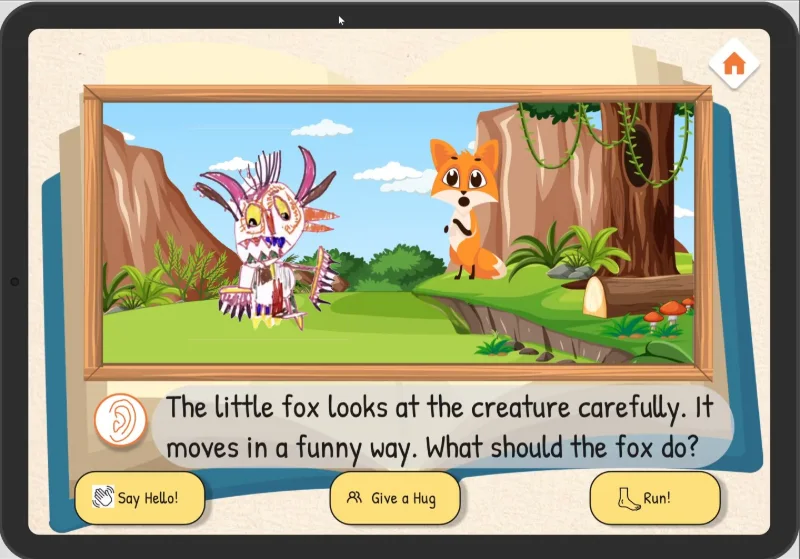
- Context
- UX design program, BrainStation
- Status
- Clickable prototype
- Project type
- Interactive storytelling app, child-centred UX design
- Role
- Designer and researcher
- Tools
- Figma, FigJam, Miro
- Methods
- User interviews, personas, information architecture, wireframing
The project
Tall Tales is a storytelling app for children ages 5 to 7 that turns screen time into story-making. Children draw characters and settings from simple templates, scan them in and watch them come alive inside a branching, choose-your-own-adventure story. Audio, touch and minimal text support early readers, and each play ends in a downloadable storybook that belongs to the child.
Significance
Most children’s apps are built around consumption and reward loops, leaving little room to create or imagine and rarely producing anything that lasts beyond the screen. Drawing on interactive fiction, from branching narratives to player-driven choice, Tall Tales reintroduces narrative agency into digital play: a child’s drawings and decisions become the building blocks of their own story world.
How it was made
Research began with interviews with children ages 5 to 7, guided by a defined interview script and by their developmental stage: an understanding of cause and effect, immersion in fantasy play and an embodied relationship with screens. Three personas emerged: Isla, who wants to make something and show it; Kareem, who tests every button to see what breaks; and Asha, who needs the experience to feel safe and unhurried.
The information architecture is organized into colour-coded sections for the homepage, story sections, drawing prompts and story blocks, built around six story moments where a child’s choice changes what happens next. Task flows were sketched by hand, then tested as wireframes without colour or animation, designed to communicate without words.
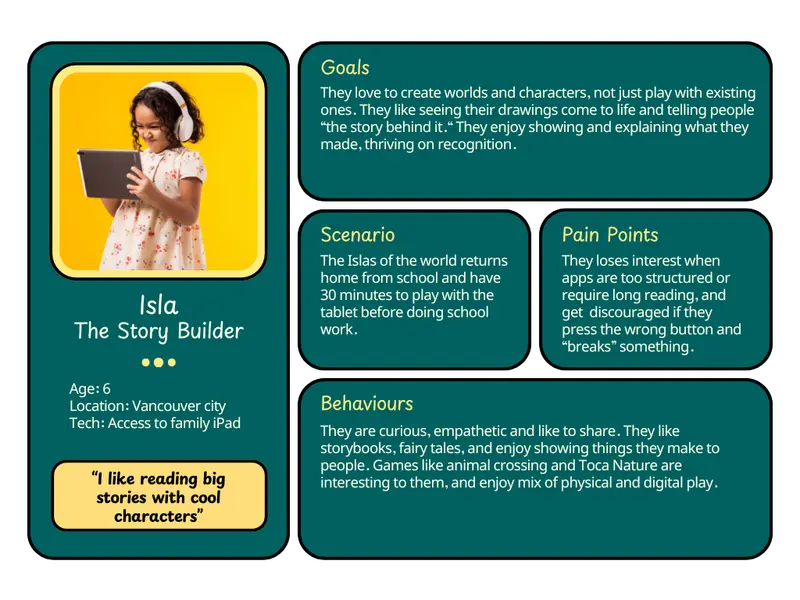
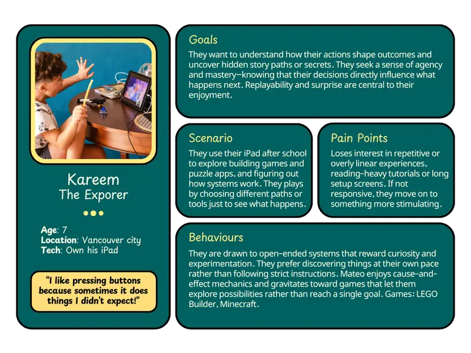
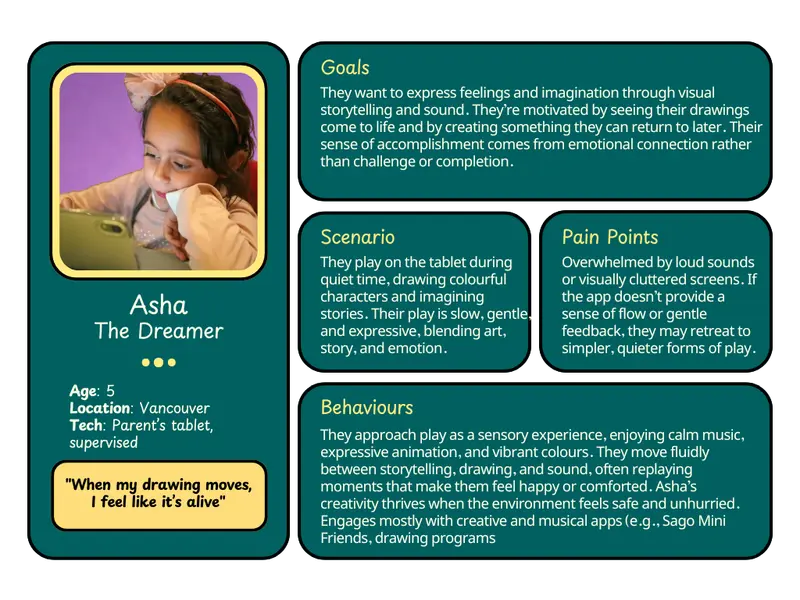
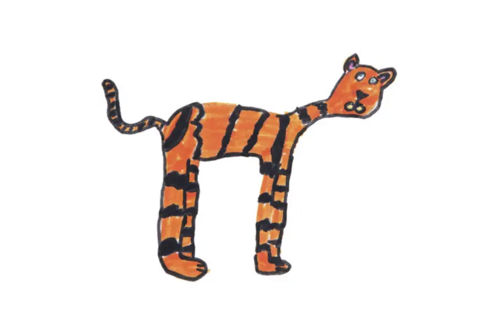
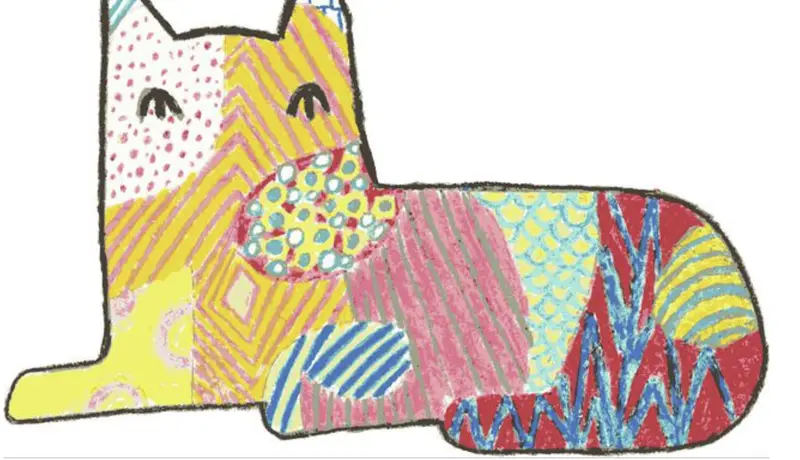
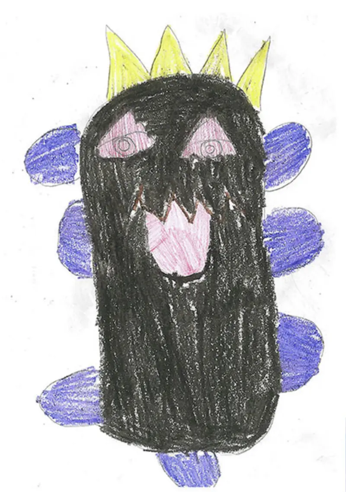
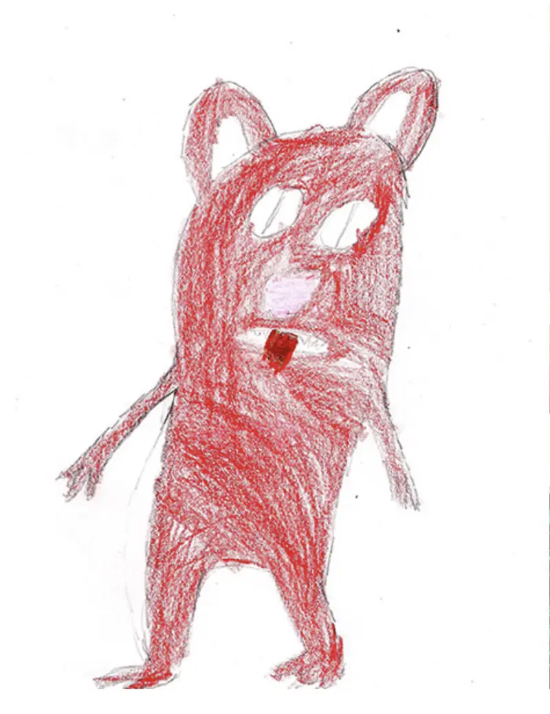
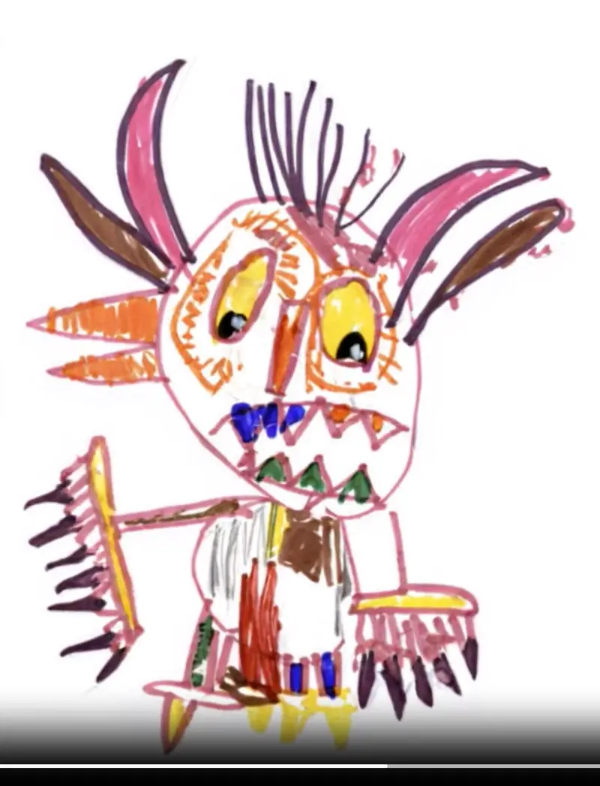
Drawings made from the character templates, ready to scan into the story.
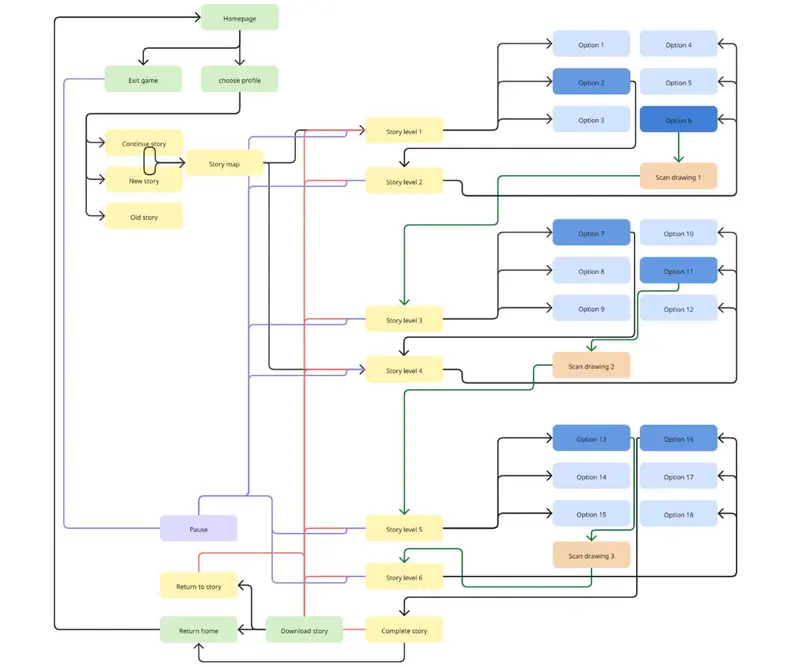
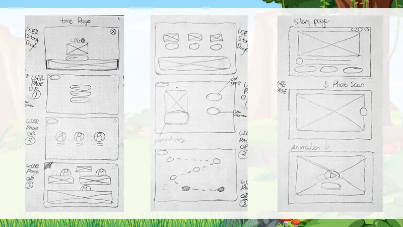
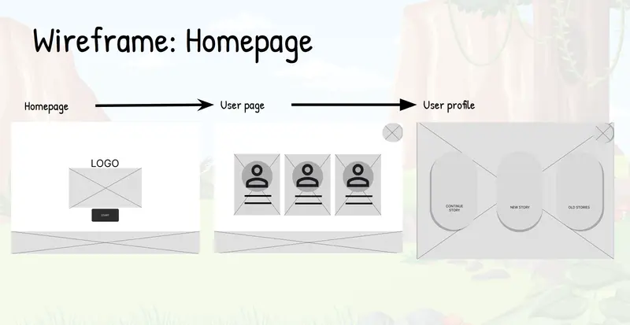
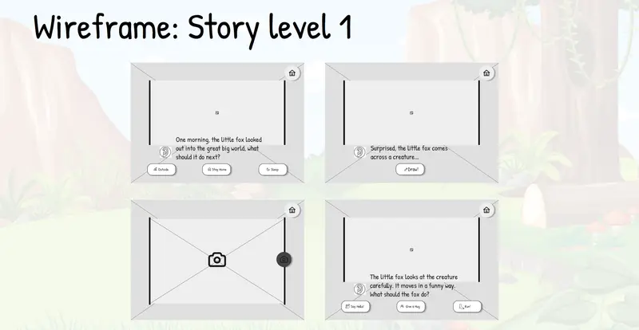
Design decisions
Children lose interest when they lose agency, not when they are bored. They value ownership of a story over finishing it, so every branch is a real decision with a consequence the child can feel. They also treat an app as an extension of their bodies: tap to wake something, drag to move it, swipe to turn a page. The scan-and-animate feature gives physical drawing a digital life, and navigation uses icons and audio, so early readers can find their way.
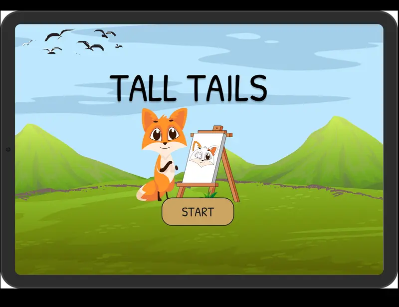
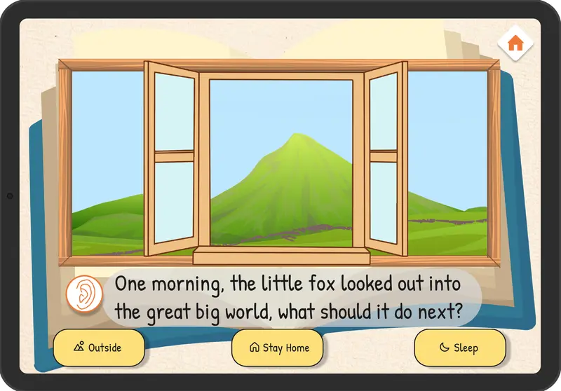
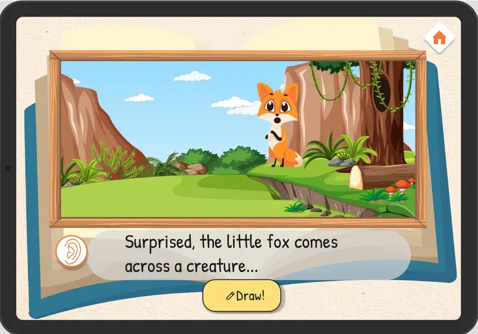
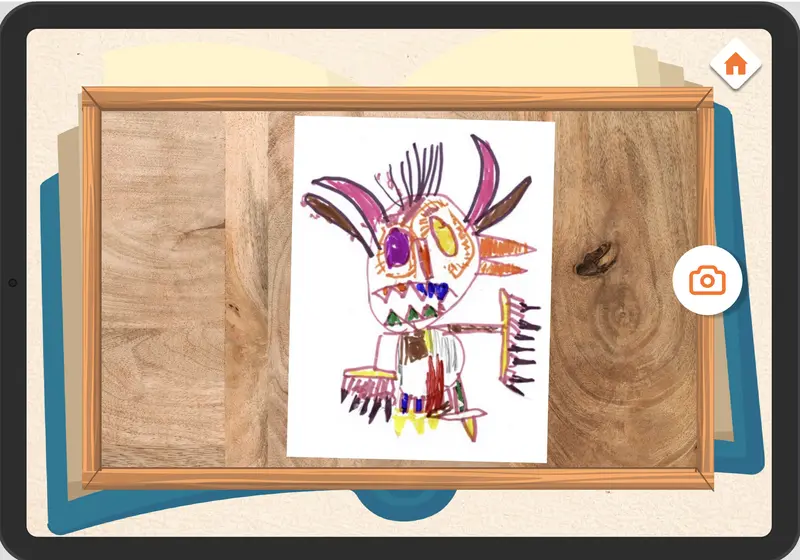
Prototype walkthrough
Outcome
The result is a clickable Figma prototype that holds all three personas and turns a child’s drawings into a story they can keep. Designing for limited reading, short attention spans and immediate, physical interaction led to a wordless, gesture-led interface. The next stage is the story itself, developed with a story writer and an illustrator who can meet children’s drawings inside a coherent visual world.